Recherche und Werkbeschreibung: Roman Pilz. Text und Fotografien wechseln sich wie in einem Magazin ab. Ein Klick auf ein Bild öffnet die Großansicht.
Fitzenreiter gilt zusammen mit Wieland Förster als einer der bedeutendsten Bildhauer seiner Generation in der DDR. Bereits 1974, bei der Fertigstellung des Großprojekts Stadthalle und Interhotel "Kongreß", an dessen Ausstattung über 20 Künstler aus der DDR und dem Ausland einbezogen waren, konnte Wilfried Fitzenreiter den Chemnitzern und ihren Gästen mehrere seiner bildhauerischen Arbeiten präsentieren. Für die Jalta-Bar des Interhotels schuf er eine ganze Serie von humorvollen Kleinplastiken und für den Innenhof des Klubs der Intelligenz eine große Plastik mit einem Paar in dynamischer Umarmung sowie einen mittelgroßen sitzenden weiblichen Akt in ruhigerem Gestus.
Fitzenreiter überzeugte die Planungsgremien für die künstlerische Gestaltung des Brühl-Boulevards 1976 wohl ein weiteres Mal, denn freudig widmete der Bildhauer Ende dieses Jahres einen seiner jährlichen Neujahrsgrüße in Form einer Münze dem Projekt: Im Stil alter griechischer Vorbilder gestaltet er beim Gruß für das Jahr 1977 das Relief eines sitzenden, älteren Mannes mit drei Frauen – den Moment des Parisurteils – und schreibt darüber schön doppeldeutig "Gute Wahl"!
Das "Urteil des Paris" besteht eigentlich aus vier Einzelfiguren, die an anderen Orten auch durchaus einzeln aufgestellt sind. So wurde die bereits 1976 geschaffene weibliche Standfigur mit den leicht abgespreizten Armen (Hera), die in Chemnitz zur Linken des sitzenden Paris aufgestellt ist, beispielsweise auch alleine im Garten der Botschaft der DDR in Paris aufgestellt. Und in Berlin, nahe der U-Bahn-Station "Spittelmarkt", steht in einem grünen Hofareal, einsam, der grübelnde Paris mit dem Apfel, der 1979 konzipiert wurde. Exemplare dieser beiden Hauptfiguren wurden zusammen auch 1982/83 auf der IX. Kunstausstellung der DDR in Dresden gezeigt.
Fitzenreiter findet mit dem vieldeutigen antiken Mythos des Paris, der in den 1970er Jahren zu einem beliebten Sujet der DDR-Kunst wird und hinter dem "Ikarus" den zweiten Platz hinter den am häufigsten dargestellten mythologischen Motiven insgesamt avanciert, eine schöne Klammer, um seiner Meisterschaft in der Darstellung des menschlichen Aktes ein gehaltvolles Thema zu geben.
Die Vermittlung der antiken Erzählung, die zur Vorgeschichte des epischen Trojanischen Krieges gehört, erfolgte in der europäischen Kunst im Wesentlichen durch die Metamorphosen des Ovid. Im Mittelalter christlich gedeutet, wird die Figur des Paris spätestens in der Renaissance zu einer Allegorie, welche die Bedingungen und die, mehr oder weniger schicksalhafte, menschliche Existenz beschreibt - und natürlich Anlass zur Darstellung "überirdischer" weiblicher Schönheit bietet.
Alle Figuren wurden vom Bildhauer in lebensgroßem Format zunächst in Gips modelliert und anschließend in Bronze gegossen. Paris ist als jugendlicher, männlicher Akt dargestellt – sehr wahrscheinlich, dass dafür einer seiner Söhne Modell saß. Locker, mit hängenden Beinen auf einem Sockel sitzend, blickt der Teenager geradeaus ins Leere. Der leicht gebogene Rücken vermittelt eine Ungezwungenheit, die jedoch durch den streng symmetrischen und sanft modellierten Körperbau in klassische Formen gelenkt wird.
Die Haltung der Arme bricht die strenge Pose wieder. Der rechte Arm liegt entspannt auf dem Oberschenkel, während die rechte den Apfel offen in der Hand hält. Der Junge blickt über den sprichwörtlichen "Zankapfel", der im Mythos "der Schönsten" gebührt, hinweg. Es scheint mehr, er präsentiere ihn den Außenstehenden als Ursache seiner inneren Bewegungen oder aber er gebe ihn gedankenverloren gleich wieder ab.
Viele Betrachter der Skulpturengruppe heben die bedächtige Stille bzw. die Sprachlosigkeit der Figurengruppe hervor. Neben dem sparsamen Ausdruck des Paris wird dieser Eindruck vor allem durch die betonte Unabhängigkeit der einzelnen Frauenfiguren vom Urteilenden und den Konkurrentinnen erzielt. Jede der Figuren ist zwar in ähnlicher Distanz um den Jungen herum aufgestellt, doch Ausrichtung und Haltung sind alle variiert und sind gerade nicht auf das Zentrum des gedachten Kreises orientiert.
Die weiblichen Aktfiguren wechseln rhythmisch mit Stand- und Spielbein sowie der Haltung der Arme. Alle tragen ein selbstbewusstes, sanftes Lächeln auf den Lippen. Ansonsten aber ganz menschliche, weibliche Proportionen. Ein wenig älter als der Junge, aber immer noch alterslos, wenden sie ihre Körper in unterschiedliche Richtungen in den Raum.
Ohne die überlieferten Attribute der Göttinnen kann man nur ahnen: Links steht Hera, die Gattin von Zeus, Bewahrerin der Ehe, Familie und Frauen; in der Mitte mit den Händen hinter dem Kopf Aphrodite, die Göttin der Schönheit und (sinnlichen) Liebe; rechts Athene, mit einer Frisur, die entfernt an den Helm, den die Kriegerin und Göttin der Weisheit meist trägt, denken lässt.
Das Ensemble wurde im Zuge der baulichen Rekonstruktion und Neugestaltung des Brühls als Fußgängerbereich beauftragt und 1980 zur Eröffnung des Boulevards aufgestellt. Als Mitte der 1970er Jahre begonnen wurde, den Brühl als autofreien Straßenzug mit gemischter Wohn- und Gewerbenutzung zu planen, war das sogar im größeren Rahmen der DDR etwas Besonderes.
Vor allem die Kombination der Instandsetzung von Altbausubstanz mit einer modernen Nutzungs- und Freiraumgestaltung war neu. Die abwechslungsreiche, mit kleinteiligen Geschäften und Gastronomieeinrichtungen belebte Flaniermeile war bis kurz nach der Wende ein großer Erfolg. Im Eckhaus hinter dem "Parisurteil" war ursprünglich das für seine Geflügelspezialitäten und die Grill-Broiler beliebte Lokal "Gockelbar" eingerichtet.
Die Beauftragung von Künstlern und Gestaltern innerhalb von Planungskollektiven war bei solchen Projekten selbstverständlich. Neben Fitzenreiters vier Bronzeskulpturen wurden auch ein Betonguss von Johannes Schulze und eine Brunnengestaltung von Reinhard Grütz realisiert. Schulzes "Liegende" in nur ca. 50 Meter Abstand ist ebenfalls eine Aktdarstellung – beide thematisieren auf direkte oder indirekte Weise den spezifisch männlichen Blick auf weibliche Reize sowie Schönheit, Menschlichkeit und Ungezwungenheit im Allgemeinen.
Der jeweilige Akzent ist ein anderer: Während die "Liegende" das Sich-Niederlassen an einem schönen (Wohn-)Ort und den Genuss des Lebens verkörpert, wird bei Fitzenreiter der kritische Moment der Entscheidung bis ins Unendliche verewigt. Auf der einen Seite preisen sich die selbstbewussten "Göttinnen" zwanglos an, auf der anderen Seite fällt dem jungen "Paris" die Wahl vor solchem Überfluss an Schönheit schwer – so wie manchem Bummler die Verlockungen des Konsums die Zeit vergessen machen und nicht jede Kaufentscheidung gleich leichtfällt.
Eine ähnliche Figurengruppe schuf Fitzenreiter Mitte der 1980er Jahre für einen Brunnen im Straßenbereich vor dem 2001 abgerissenen Palasthotel in Berlin. "Drei Mädchen und ein Knabe" saßen ursprünglich Rücken an Rücken über einem Wasserbecken. Heute sind die jugendlichen Aktfiguren publikumswirksam am Spreeufer auf einer Mauer gegenüber dem Dom positioniert.
Wilfried Fitzenreiter wurde 1932 in Salza (heute Teil von Nordhausen im Harz) geboren und verstarb 2008 in Berlin. Fitzenreiter wuchs in Halle auf und machte dort zunächst von 1951 bis 1952 eine Steinmetzlehre. Anschließend studierte er von 1952 bis 1958 Bildhauerei am Institut für künstlerische Werkgestaltung (Burg Giebichenstein) bei Gustav Weidanz und Gerhard Lichtenfeld.
1958 geht er nach Berlin, wo er bis 1961 Meisterschüler bei Heinrich Drake an der Deutschen Akademie der Künste ist. Nach seinem Abschluss arbeitet er seit 1961 als freischaffender Bildhauer. Von 1975 bis 1981 hat er einen Lehrauftrag an der Kunsthochschule Berlin-Weißensee.
Fitzenreiter wird der Berliner Bildhauerschule zugerechnet, wurde aber insbesondere in seinem Schaffen als Medailleur stark von seinem Lehrer Weidanz in Halle geprägt. In seinem ausführlich dokumentierten Nachlass werden über 700 plastische Arbeiten erfasst, davon etwa 500 Entwürfe für Medaillen und Münzen. Er modellierte und schnitt seine Arbeiten hauptsächlich in Gips, Ton und Wachs, um so die Vorlagen für die ausschließlich in Metall ausgeführten Güsse und Prägungen zu schaffen.
Daneben sind auch Grafiken und Handzeichnungen als Studien belegt. Wesentliches Thema der von ihm geschaffenen Groß- und Kleinplastiken sowie der Medaillen ist die menschliche Figur in einer naturalistischen, klassischen Form. Meist als Akt ausgeführt, zeigt er den Menschen in ruhiger Haltung, manchmal auch als Sportler oder Spielenden.
Die Antike, erotische Motive und persönliche oder politische Ereignisse sind weitere wichtige Quellen seiner Inspiration. Die Werke des Fitzenreiters sind in zahlreichen öffentlichen und privaten Sammlungen vertreten und wurden auch nach seinem Tod 2008 regelmäßig ausgestellt. Er erhielt auch mehrere wichtige Auszeichnungen, beispielsweise 1979 den Käthe-Kollwitz-Preis der Akademie der Künste, 1981 den Nationalpreis der DDR sowie 2007 den Hilde-Broer-Preis der Deutschen Gesellschaft für Medaillenkunst.
Im öffentlichen Raum von Chemnitz waren neben der Figurengruppe auf dem Brühl ursprünglich zwei weitere Bronzen von Fitzenreiter aufgestellt – im Schloßteichpark sowie im Park der Jugend auf dem Schloßberg – diese wurden jedoch 2014 gestohlen und wurden nicht ersetzt.
Tragischer Schönheitswettbewerb
Wilfried Fitzenreiter: Die Bronzeplastik „Das Urteil des Paris“ (1980), Brühl
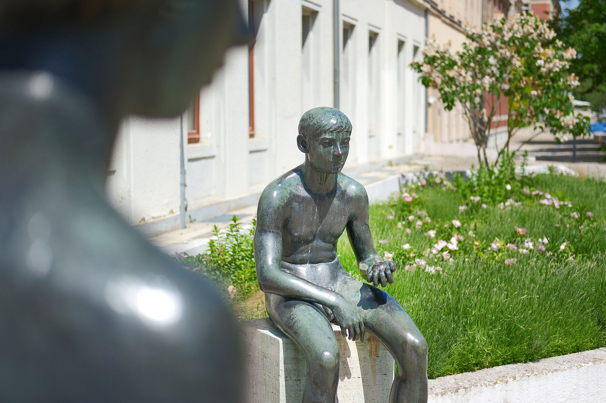
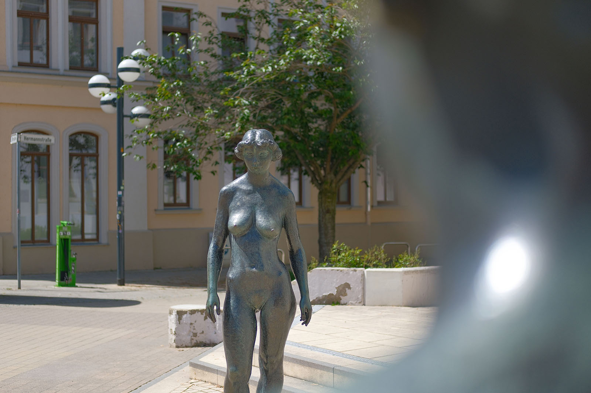
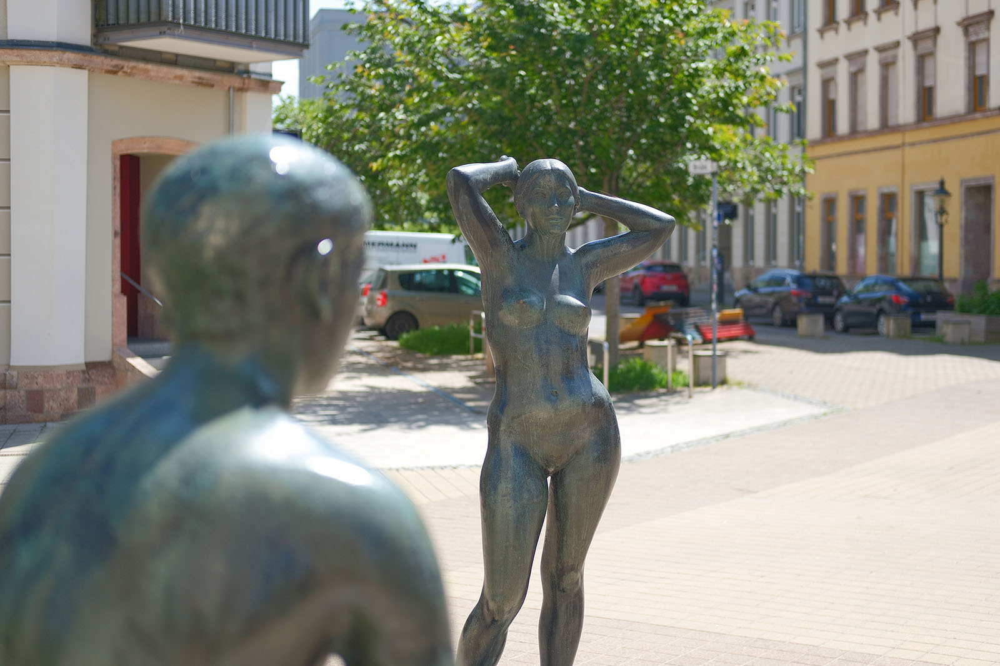
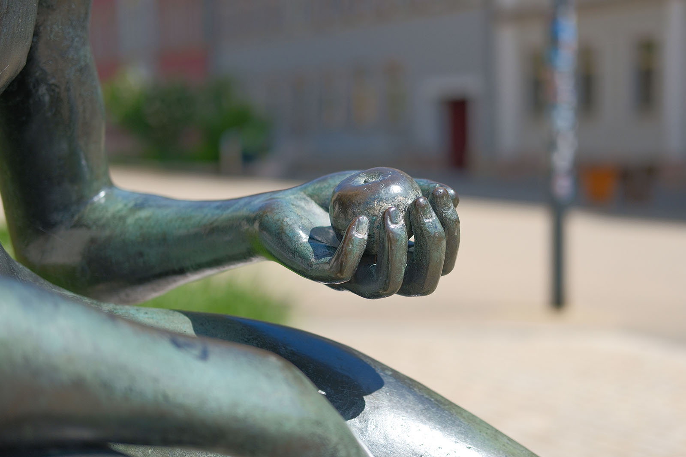
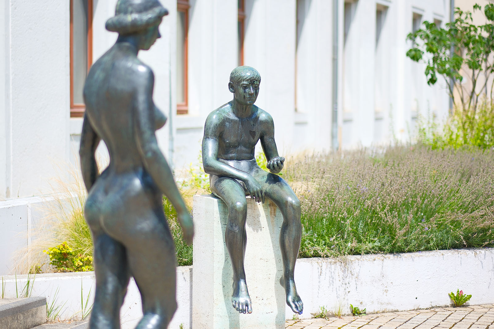
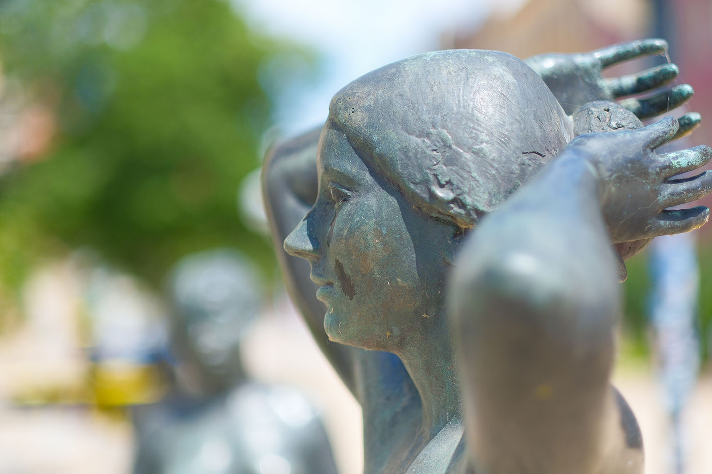
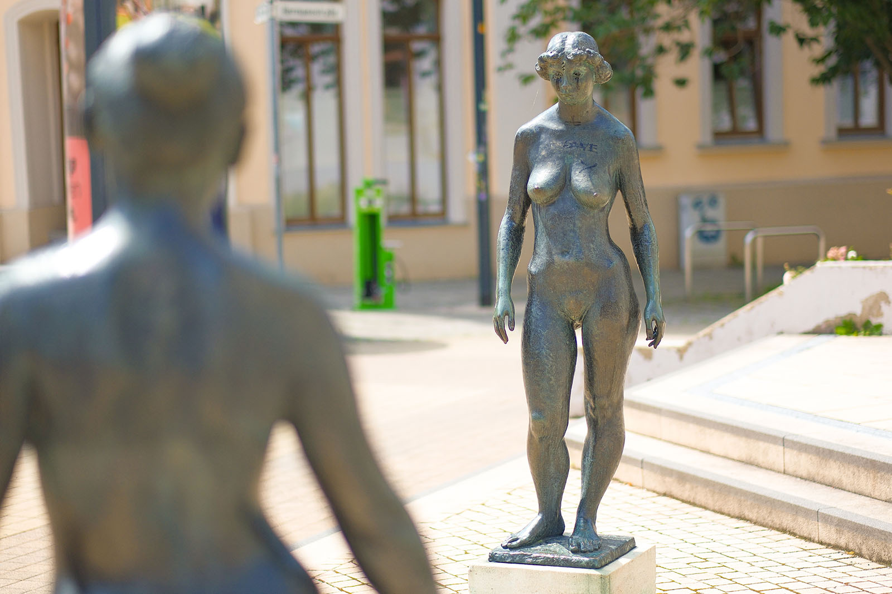
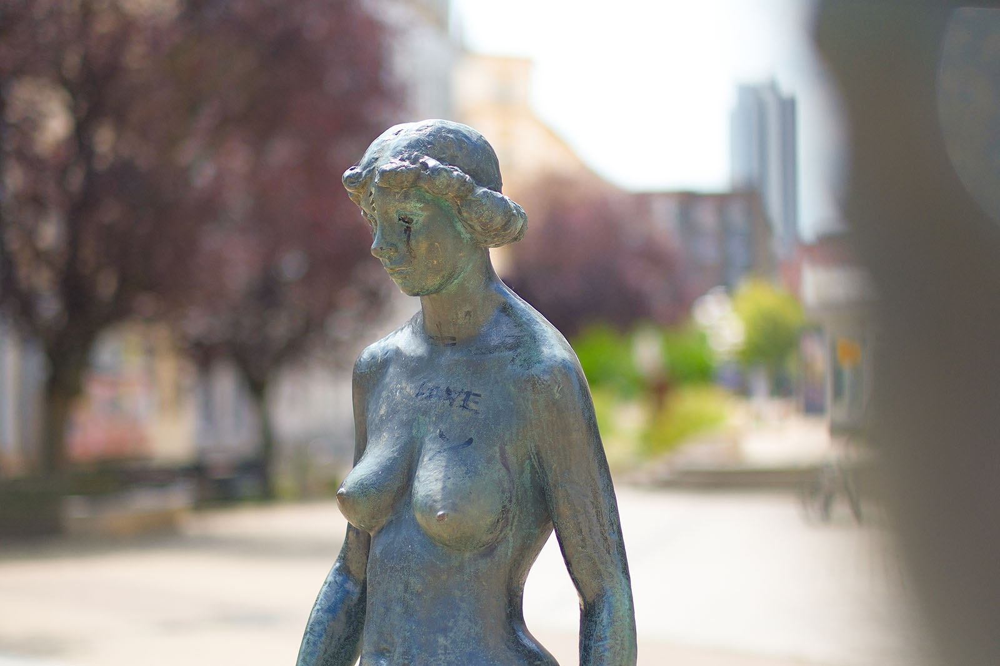
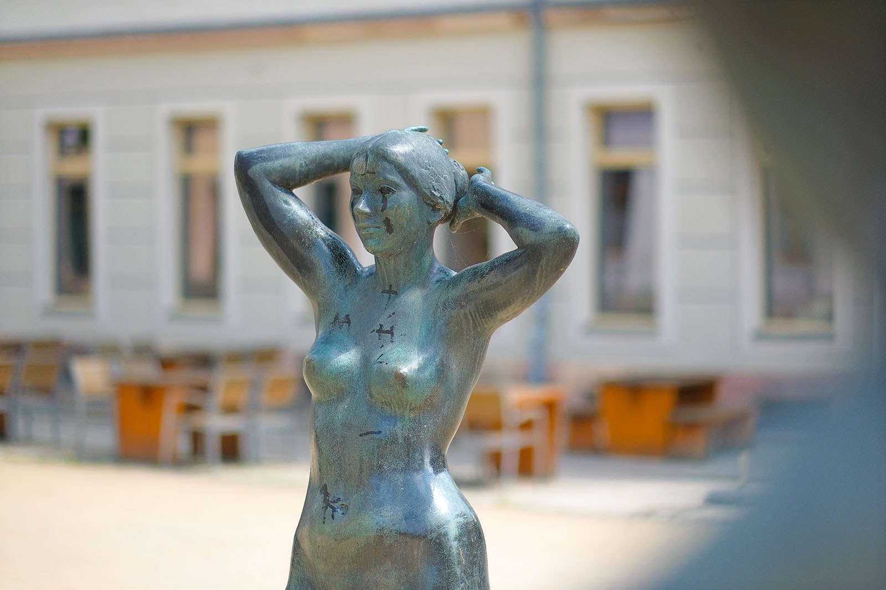
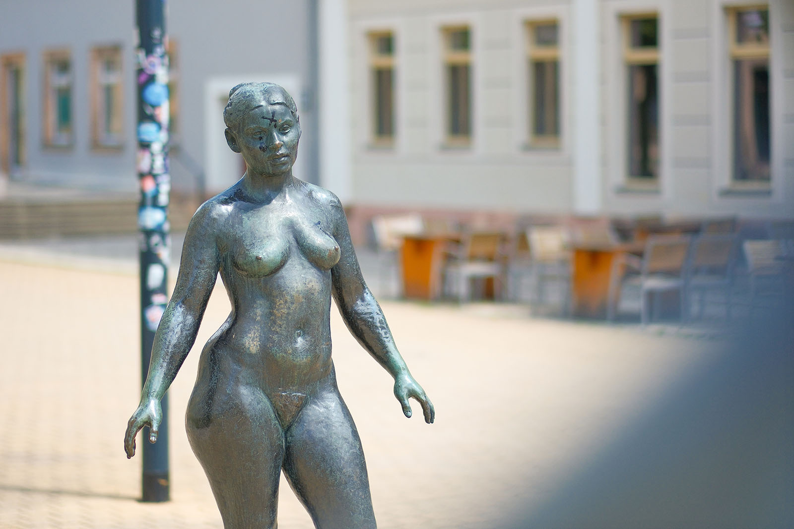
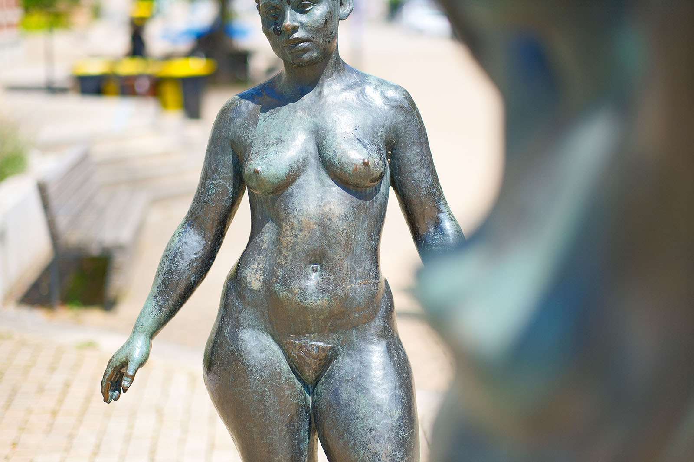
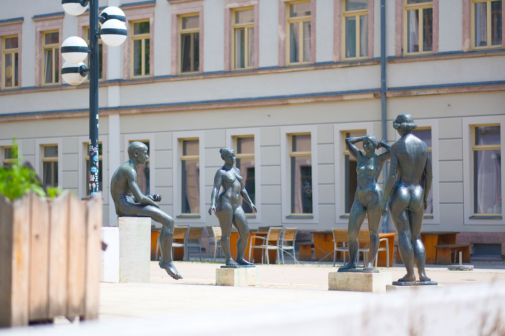
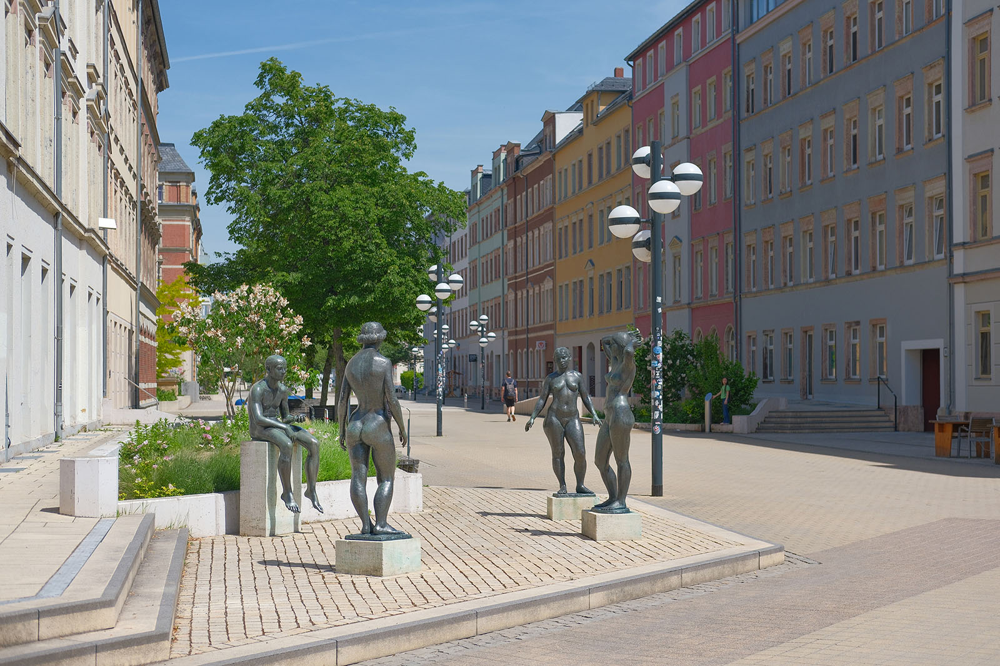